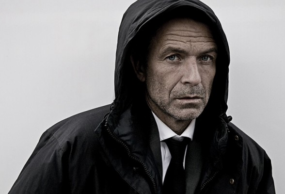

#138 Bros Before Hos


 IMDB-Wertung: 6.4 / 10
IMDB-Wertung: 6.4 / 10  Metascore: 0
Metascore: 0 
Als kleine Kinder mussten Max und Jules ihrem vom Ehekrieg schwer gezeichneten Vater versprechen, niemals zu heiraten, weil das nur Stress und Unglück bringt. Zu properen jungen Männern gereift, einem Videothekar und einem Supermarktfilialleiter, erweisen sich beide als große Frauenhelden, ohne aber je ihr Motto zu vergessen: Der Kumpel kommt immer vor der Schlampe. Das ändert sich dramatisch, als beide die schöne Anna kennen lernen. Max liebt sie aufrichtig, und Jules steht einfach auf sie. Der Kampf ist eröffnet.
Jahr: 2013
Dauer: 87 Minuten
FSK: 16
Land: Niederlande Studio: EuroVideoTonspuren:
Untertitel:
Auflösung: 1080p (1920×808) Größe: 5570 MB
Genre: Komödie
Regisseur: Steffen Haars, Flip Van der Kuil
Drehbuch: Steffen Haars, Flip Van der Kuil
Soundtrack: Manna Horsting, Michiel Marsman
Darsteller:
 Sylvia Hoeks als Anna
Sylvia Hoeks als Anna- Flip Van der Kuil als Lingo contestant 2
- Birgit Schuurman als Mercedes
- Jennifer Hoffman als Suzanne
-  Raymond Thiry als
 Huub Smit als Jordy
Huub Smit als Jordy- Steffen Haars als Lingo contestant 1
- Theo Maassen als Bart
- Daniël Arends als Jules
- Wynn Heliczer als Fantasia
- Eva Duijvestein als
- Celine Prins als Kim
- Nick Golterman als Vakkenvuller Henk
- Bert Hana als Jeroen
- Tim Haars als Max
 Nils Verkooijen als
Nils Verkooijen als - Bo Maerten als Girl, videostore
- Henry van Loon als René
- Ton Kas als
- Juliette van Ardenne als Eefje
- Joost Koning als Bezoeker Videocorner
- Marieke Westenenk als Nola
- Dick van den Toorn als Hans
- Pepijn Cladder als Police Officer 2
- Marco Maas als Robber
- Jackie van Parijs als Arlette
- Ferdi Stofmeel als Young Police Officer
- Ivo Martijn als Voice-over natuurfilm
- René van Berge Henegouwen als Police Officer Number 3
- Eva Damen als Paula
- Sammy Berendsen als Cindy
- Jimmy Tai als Customar
- Pieter Bouwman als Kenrick
- Jip Smit als Irma
- Jules Seegers als
- Leny Breederveld als Mieke
- Imke Donkers als Inge
- Nees Haars als Man in Supermarket
- Jonah Weideveld als Jules, 4yrs
- Kristel van Grunsven als Denise
- Hedy Wiegner als Old lady
- Martijn Donker als Rico
- Vincent Lodder als Police Officer 1
- Valerie Pasker als Girl
- Tobias Occelli als Max, 12yrs
- Damian van Dam als Jules, 12yrs
- Floor Rolf als Lieke
- Ruben Herschberg als Rik
- Charity van Dam als Granddaughter
- Anette van Luyk als Marjan
Datei: X:\2013(A-F)\Bros Before Hos (2013, FSK16, 1920x808).mkv seit 13.02.2015
Festplatte: HD 2012(N-Z)-2013(A-H)
 Es gibt insgesamt 127 Filme in der Gruppe '2013(A-F)'
Es gibt insgesamt 127 Filme in der Gruppe '2013(A-F)'